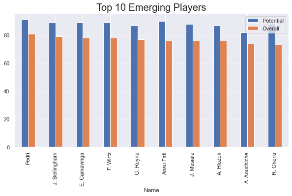

About My Projects
My data analysis and machine learning projects are listed below
- Data Analysis of Fifa_22 offcial data
- This is a project where I have done data analysis of the data from Kaggle. For data analysis and visualization, I used pandas, seaborn, numpy, matplotlib, and scipy. I answered basic questions about Fifa 2022 and compared Ronaldo and Messi's skills. The project demonstrates some of the things that can be done in data analysis, although there are many more to be done. Click here for more details. 